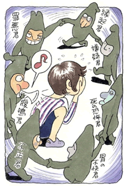

強迫性障害3
私が変になりそう、壊れそうという恐怖
（強迫観念、縁起恐怖、嫌疑恐怖、他）
東田 祥子（仮名）25歳・OL
神経症になったきっかけ
私は小さい頃から、人見知りがあり、内弁慶で外面がよいような子供でした。小学3年生の時、祖父が亡くなったのがきっかけで、「死の恐怖」に陥り、夜になると「人は死んだら何処へ行き、魂はどうなってしまうんだろう」と、そんな恐怖に悩まされました。学校では、できるだけ列をはみ出さない様に友達に合わせているようなタイプで、主張することもしないけれど、活発に遊んでいるような小学生でした。
中学になり、陸上部に入部し、毎日部活三昧の楽しい学生生活を送っていました。でも、そんな楽しい部活生活も長くは続かず中学2年から高校受験のため数学塾に通い始めました。先生は白髪混じりの優しいおじいさんで、一対一で向かい合って教えてくれるという形式の塾でした。私は塾に行くのが嫌で嫌で、先生の前ではいつも、分からないし面白くないので膨れ面な顔をして授業を受けていました。中学3年の時、塾からの帰り、不意に今までの自分の態度を振り返り、「私がとってきた態度が先生にストレスを与えて身体を悪くされたのでは？」という大きな心配に変わりました。先生は歳も歳でしたので、私の心配は余計に広がっていき、考えがもの凄い勢いで加速して不安から恐怖に変わっていきました。
いつもなら私が帰るとすぐに消えるはずの部屋の電気が、その日に限って消えなかったため、「もしかして先生が心臓発作で倒れてるかも…」という不安な考えが消えなくなり、その夜、初めて気が狂いそうなほどの恐怖感に襲われました。「私のせいで先生を死においやってしまった。私は人殺しをした……」という考えが押し寄せその考えを抑えようと、「そんな事がある訳がない」と自分に言い聞かせるのですが、不安にかき消されてゆきました。それに輪をかけるように友達が言っていた「考え過ぎると胃が痛くなるんだって…」と言う言葉を思いだし、激しい胃の不快感を覚えました。この出来事が私の神経症の発端となりました。
次々に起こる神経症。学校生活がまともに送れない

それから徐々に自分の中のバランスが崩れてゆき、次第にあらゆる症状が出始めました。喉に異物感を感じ息苦しくなったり、不吉な事があった日に着ていた服は着なくなったり、黒い物など踏んだら再度通り直したり、プラットホームに立つと電車に飛び込みそうな感覚に襲われたり、コンセントやガスの元栓を何度も確認したり、脳硬塞の話しを聞いて片頭痛に襲われたり、被害妄想と加害妄想が交互に発生して発狂しそうになりました。次々に起こる縁起恐怖、嫌疑恐怖、罪悪恐怖、不正恐怖、自殺恐怖、など、いろんな症状が出ては消えての繰り返しでした。
ついに自分で自分をコントロールできなくなり、結局、精神科を受診することになりました。精神科ではカウンセリングを紹介され、高校1年の終わり頃からカウンセリングに通い始め、少しずつですが心の安定を取り戻していきました。高校3年なったばかりの実力テストで、過敏性腸症候群の症状にとりつかれました。何日前からか、お腹がグビグビっと動き鳴り始めたり、お腹にガスがたまり不快感があったり、少しお腹が緩い状態が続いていました。
静かな教室で実力テストを受けていると、ふと「もし、この静かな状況で、何日か前のようにお腹がグビグビ鳴ったらどうしよう」と考え始め、今にも腹鳴を伴いそうな感覚に襲われました。「こんな静かな教室で、お腹が鳴って、みんなに聞かれたら恥ずかしい」と思い、気を紛らす為にテスト用紙に絵を書いて、そっちに気をひこうとしましたが、考えは止まらず、居ても立っても居られない心境になり、保健室に逃げ込みました。それがきっかけとなり、下痢になったり、便秘になったり、腹鳴したりし始め、静かな授業や講習、トイレのない場所や状況が恐くなりました。
やがて全ての教室での授業やテストの時の静けさが苦になり、テストも保健室で受けるようになりました。学校の授業も症状が出るのが恐くて欠席する日が増え始めました。病院も何件も受診してみましたが、一向によくならず、ドンドン身体症状が膨れあがっていき、ついに学生生活が送れないという悲惨な状況になりました。
私には森田療法しかない！
なんとか解決法はないだろうか？と、藁にもすがる思いで本屋に行きました。その時出会った本が大原健士郎先生の「心が強くなるクスリ」でした。この本で森田療法の事を知り、私と同じ高知県出身のとても偉い森田正馬先生に出会うきっかけとなりました。
その日から何冊も森田療法の本を読み漁りました。ここにもあそこにも自分のことが書かれていると本当に驚きました。私には、もう森田療法しかない！と思い、「あるがまま、あるがまま」と小さな胸に手を合わせて必死になって唱えました。「森田先生、どうぞ私をお救い下さいませ」と逃げたい状況でも逃げることなく「あるがまま」でやってきました。
何とか頑張って、やっと卒業の季節を迎えました。卒業式の練習で出席順に座り、先生が名前を呼ぶ練習をしていました。お喋りする人は誰もいない静かな状況でした。緊張はピークに達してしまい、自分でも驚く程の大きさでお腹が鳴ってしまいました。周りの友達は全員笑いだし、皆が「今のは誰？」とニヤリと笑ってるのです。近くの友達には私だということはもうバレバレです。
いたたまれなくなりその場にいることができなくなり、保健室に逃げました。この体験が余計に症状のトラウマとなり頭にこびりついて離れません。私はトラウマを抱えたまま専門学校に入学しました。ですから静かな教室などに入りますと、必ず腹鳴してしまう状況に耐えられず、神経科で漢方薬と安定剤を処方してもらい、薬が手放せなくなりました。
森田書籍に書かれている自分に似た症状や、解決法はないだろうか、どうすれば治るのか？そういうページばかり探し読んでいました。森田療法の本のお蔭で自分が神経質タイプだというこを知り、学校を卒業してからは服薬も少なくなり、カウンセリングに通う回数も減り、次第に通わなくなりました。それから22歳まで森田療法の本を読みながら、書かれているとおりに、嫌々でもしなければいけないことはしてきました。
私はベストを尽くして頑張りましたが、症状は一向に消えませんでした。森田先生の本を何冊も読んでいくうちに余計に難しく感じたり、分からなくなってきたり、先生が矛盾してる事を言ってるように思えたり、もう私の頭の中は大混乱です。
独学から、心の体験フォーラムへの参加
もうダメだと諦めかけた時、インターネットでメンタルヘルス岡本記念財団のホームページを発見しました。またこのホームページでも私のことが書かれてあると端から端まで全て読みました。重要な箇所は印刷をしていつも持ち歩くようにしていました。
このサイトの《心の体験フォーラム》というコーナーに参加し、自分の症状の悩みを書き込んでいきました。ここではMさん（当財団職員）をはじめ多くの優しい先輩方が丁寧に慰めてくれたりアドバイスをしてくれました。同じ悩みを抱えた方との会話交流がとても心の支えになっていきました。ほとんど毎日、書き込みを続けました。いつも分からない、分からないと泣いてばかりでした。
そして、その後、森田療法を学びあう自助組織・生活の発見会を知り、非会員として参加するようになりました。高知集談会（生活の発見会の会合）は月1回で、仕事の休みがとれないことが多く参加できない事もありましたから、インターネットを利用して分からないことは聞いて実践に励みました。
でもインターネットでは、相手の顔色も見えませんからわがままばかりぶつけますので、症状が日に日に変わります。「この症状さえなければ」ということばかり考え、次第に生きていく事さえ辛く思え、「この悪循環から、症状から解放されるには、どうすればいいですか？」といつも同じような苦悩を訴え続けていました。
多くの方が元気になられ克服されていくのに、なぜか私一人が取り残されていくような気がしてなりません。私より後で学び始め、みるみるうちに習得されていく方がいて「なぜ私は良くならないんだろう？森田療法の適応対象者じゃないんだ。」と一人で落ち込みました。こんな状態を繰り返しましたが、自分に怒りを感じそれでも諦めずに本気で森田療法を学び直そうと再度本を読み直し、ノートに書き出し始めました。と同時に健康な体づくりを目指そうと決めました。
やがて、Mさんやその仲間が日頃から自転車で体を鍛えてるという事を知りましたので、私もロードを始めたいと相談しました。すると、私と同じ症状で苦しんでいた村上由美子（同名の克服体験記参照）さんが乗っていた、貴重なロードを譲っていただけることになりました。外出恐怖、頻尿恐怖、他にも沢山ある症状が治らないままに私は高速バスで大阪に向かいました。
大阪では驚きの連続でした。まず、お昼はメンタルヘルス岡本記念財団主催の健康セミナーに参加しました。夜は夜間の初心者コーナーに参加して生活の発見会の説明会を聞きました。会の後半は実際の集談会を見学しました。その日一日だけで50人以上の人に出会ったでしょうか。どの先輩方も熱心でとても親切でした。私は皆さんの森田理論学習に取り組む態度に強い刺激を受けました。
これを機会に私も正式に発見会に入会しました。高知の発見会、そして毎月送られてくる発見誌、森田療法の本、そしてネットを利用し森田療法を再度学び始めました。そうしていくうちに、以前は分からなかった、森田先生の言葉や、どうして症状に取り付かれたのか？それらのことが少しずつ分かるようになってきました。
以前の私は頭の中で「こうしたら、こうなる！」と考えても行動しませんでした。掃除することや、布団の上げ下ろしをすることに、何の意味があるのか理解できず、やっても症状は消えない、そんなことでは治らないと思っていました。でも本には「掃除やしなければいけないことをしていく」と書いているため、嫌々行動に移していきました。私にとってすべての行動は症状を治すための実践になっていました。嫌々でも徐々に行動に移していると、知らない間に嫌気を忘れ、夢中で掃除している自分に気づきはじめたのです。そこでやっと、「感情は常に変化するものだ、快も不快もいつも長くは続かない」と気がついたのです。
つまり、森田療法で言う「感情の法則」を行動してやっと体感したのです。それから、動くのが億劫でも、不快があっても、やらなくちゃいけない事に手をだし、気分本意から目的本意へと私の行動は変わっていきました。でもすぐに「感情の法則」を習得できた訳ではありません。一番辛かったのは、行動する気力がない時、動くことができなかったことです。気分が良ければ動けるのは当たりまえだけど、動く気力がない時に、なかなかすぐに動けないと、「こんな自分じゃいけない」と自分を追い込むため、余計に動くことがおろそかになっていました。そんな時は、少しずつ手を出していき、できる事から、少しだけでもいいから目の前のことから手をだしていきました。そして「調子のいい時は、あれもこれもできたのに」というように、「できた時の自分とできなかった時の自分を比べる」ことを止めました。
「行動できた自分」も「行動できなかった時の自分」も同じ「自分」であることを認め、完璧にすべてをこなそうとしないで、森田療法で言う60点主義で行動し始めました。今では、自転車通勤したり、森田療法の書籍を読んだり、余暇を楽しんだりとバランスを大事に生活しています。どれか1つだけ頑張っても片寄ってしまいそうに思います。森田先生もあらゆることに手をだし、遊んだりしていたと本に書いてありました。私も興味あるものに手をだし行動しています。これからは森田療法の教えを人生学習としていき、いろんなことを体験していきたいです！